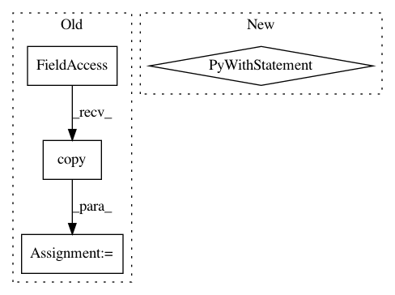

380d21e6ef97648de99c4d9fb76814484f2f024f,reframe/core/schedulers/slurm.py,SlurmJobScheduler,_update_state,#SlurmJobScheduler#Any#,296
Before Change
cmd = "sacct -S %s -P -j %s -o jobid,state,exitcode,nodelist,end" % (
datetime.now().strftime("%F"), job.jobid
)
sacct_env = os.environ.copy()
sacct_env["SLURM_TIME_FORMAT"] = "standard"
completed = _run_strict(cmd, env=sacct_env)
self._update_state_count += 1
After Change
def _update_state(self, job):
"""Check the status of the job."""
with env.modify_env(variables={"SLURM_TIME_FORMAT": "standard"}):
completed = _run_strict(
"sacct -S %s -P -j %s -o jobid,state,exitcode,nodelist,end" %
(datetime.now().strftime("%F"), job.jobid)
)
self._update_state_count += 1
// This matches the format for both normal jobs as well as job arrays.
// For job arrays the job_id has one of the following formats:
In pattern: SUPERPATTERN
Frequency: 4
Non-data size: 4
Instances
Project Name: eth-cscs/reframe
Commit Name: 380d21e6ef97648de99c4d9fb76814484f2f024f
Time: 2019-12-13
Author: eirini.koutsaniti@cscs.ch
File Name: reframe/core/schedulers/slurm.py
Class Name: SlurmJobScheduler
Method Name: _update_state
Project Name: matplotlib/matplotlib
Commit Name: 5be3c6df52e412b6b0c937c997ab770a3a9cd27c
Time: 2018-03-28
Author: anntzer.lee@gmail.com
File Name: lib/matplotlib/style/core.py
Class Name:
Method Name: context
Project Name: matplotlib/matplotlib
Commit Name: f564af739e7ad9edd8038628c444d28cde79b87b
Time: 2018-05-30
Author: anntzer.lee@gmail.com
File Name: lib/matplotlib/testing/conftest.py
Class Name:
Method Name: mpl_test_settings
Project Name: matplotlib/matplotlib
Commit Name: 5be3c6df52e412b6b0c937c997ab770a3a9cd27c
Time: 2018-03-28
Author: anntzer.lee@gmail.com
File Name: lib/matplotlib/tests/test_backend_pgf.py
Class Name:
Method Name: test_rcupdate